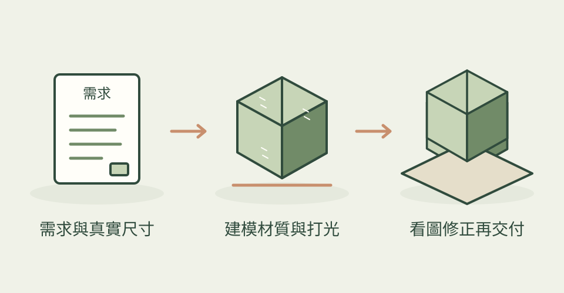

想做一盞會真正照亮桌面的金屬桌燈，卻不知道如何把建模、材質與燈光接起來？這套合集把一句話的 3D 需求拆成製作步驟，引導 AI 助手透過 Blender MCP 操作場景、渲染看圖，再修正比例與照明。它是三十項可串接的工作指引，不是新的生成模型。
它怎麼幫忙
先確認尺寸與場景狀態，再安排白模、鏡頭、光線、材質和細節，渲染後必須檢查主體是否清楚、比例和構圖是否符合需求。參考圖路線另會整理正側視圖、輪廓與材質圖冊，透過疊圖和多視角反覆修整；匯出可按網頁、遊戲或列印用途選擇格式。v1.4.0 支援官方 Blender Lab 與 ahujasid 兩種 MCP，並加入碰撞網格 FBX 與 Multires 烘焙匯出的檢查。
三步驟看懂這個技能

串接 Blender 製作步驟，渲染檢查後依用途匯出；本站功能示意，非作者成果或執行結果。
功能示意・本站繪製 放大查看可以這樣開口
這是一個可依需求修改的委託範例。
做一盞可調角度的黑色金屬桌燈：燈罩內側發光，桌面要有實際照明，先給產品照檢查，再輸出網頁展示用 GLB。這是本站需求範例，未實際執行。
適合什麼工作
適合已有 Blender 基礎、想把重複建模和檢查步驟交給助手的產品視覺、遊戲道具與品牌 3D 設計者。
開始之前
- 準備工具
- 需要支援技能的 Codex、Claude Code 等代理、Blender，以及已設定的 MCP。官方路線需 Blender 5.1+、外掛和獨立 MCP 程序；ahujasid 路線保留 Blender 4.0+，作者未實測 4.x。圖片分析輔助需 Python 3.9+、OpenCV、NumPy、SciPy、Pillow。
- 使用成本
- 程式與隨附文件 MIT，Blender 免費；助手使用額度與本機渲染時間另計。基本程式化建模不需付費生圖 API；選用第三方資產或 Hyper3D 生成時，另依服務帳戶、授權與費率處理。
- 交付內容
- Blender 場景、渲染圖、動畫，以及按用途匯出的 GLB／glTF、FBX、OBJ、USD、STL；實際內容取決於所選流程。
- 先留意
- 2026-11-25 首次收錄；儲存庫建立於 2026-04-27，不是今天發布。本次核實 185 星，屬小眾候選。作者 v1.4.0 驗證環境為 Blender 5.1.1；4.x、5.2 與 Unreal 真正匯入尚未驗證。數值檢查通過不保證美術品質，真人臉和複雜參考圖仍需人工判斷。桌燈圖是作者 v1.1.0 驗證成果，不是新版新作或本站實測。
作者與來源
本文依作者公開說明整理，沒有實際執行這個專案。功能插圖由本站繪製，原作者範例另行標示；並非本站執行技能的測試結果。GitHub 星數為專案總量，觀察時間為 2026年11月26日 08:32（台北時間）。
與前次快照相比增加 0 星；這不是 GitHub Trending 排名。